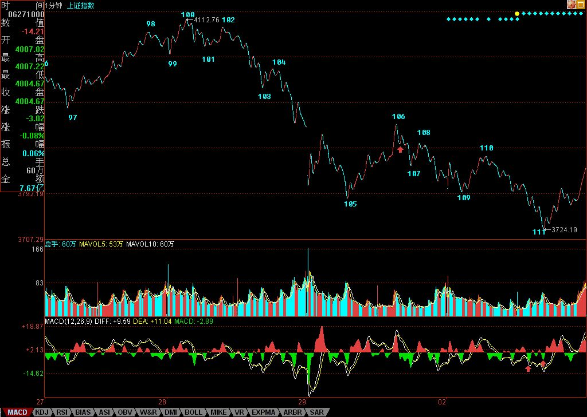

缠中说禅博客
缠中说禅 当代奇人，
一个永远只愿站立且希望探索、
展示人的所有潜能和可能的人，真实身份未明。

解盘：今天看不明白的都请严重补课。
(2007/07/02 15:32:58 周一)
今天的走势，简直是标准教科书，连这都看不明白，你要严重补课了。下图中110点的线段里的小顶背驰，111点的小底背驰，都是极端标准的。111点，看不明白的，看看MACD里那两个红箭头指着的绿柱子面积比。如果还有人问，为什么前面的不是，就一定要把分型、笔、线段那课以及63那课好好看了。图中红箭头处，趁着现在1分钟图还能看到，请去好好研究那为什么是一笔，那底分型是怎么构成的，这都有最严格的标准。
至于走势，没什么可说的，就是震荡，这里是本ID理论的天堂，如果说单边势傻瓜都能赚钱，那么这种市场，就不是一般人能把握的了。能把握，就有了一个好的吸血机器，练习好了，那算有点模样。具体的中枢分析，本ID不准备说了，有这么明确的线段划分，按照递归定义，答案不难得到，如果这都不练习一下，那就没法学了。大的技术位，和周五说的没什么不同，唯一需要补充的，就是图中107这一点，如果能站稳，至少这中枢震荡是有保证的，上面还是3919点是第一压力，现在，等于成了一颈线位置了。再上面，就是5周均线的位置。大图上说，今天是受到5月均线的支持产生的反弹，这线最重要，三角形还是平台型，就看这5月均线是否有效跌破了。
注意，再次强调，这种震荡行情，没什么基础的，最好就观望，半仓、空仓都无所谓，没这本事，就不一定玩这游戏，当然，如果你要学习，要练习，可以用少量资金。对于初学者，震荡的原则就是，宁愿卖早，一定不卖晚，有钱，还怕买不到股票？
个股方面，本ID那些股票各位都知道，除了新进去的二、三只，本ID现在是在保持0成本赚筹码阶段，震荡幅度越大越高兴，技术不好的、心脏不好的，千万别参与，找些脾气好点的股票，本ID的股票，一般脾气都不大好。
先下，下午、晚上，忙，还要赶回北京。明天见。
